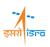

chevron_rightSpearheaded major upgrades for Zaloni on SIT, UAT, and DEV environments, and orchestrated the preparation of PROD and DR for upgrade.
chevron_rightOversaw the generation and analysis of monthly metrics, automating key processes to enhance efficiency.
chevron_rightCoordinated and participated in monthly patching activities with cross-functional teams
chevron_rightManaged and resolved numerous Nexus and change requests by troubleshooting the platform and collaborating closely with the vendor partners and other cross-functional teams to address tenant issues
work

Intern
Indian Institute of Remote Sensing(IIRS-ISRO)
July 2020- Dec 2020
chevron_right Led satellite image processing and visualization initiatives within the Geoinformatics department by leveraging artificial intelligence technologies
chevron_rightDeveloped and implemented a Semantic Segmentation module using the U-Net convolutional neural network, achieving 92.28% accuracy and demonstrating precise execution and timely delivery.
chevron_rightEngineered a brick kiln detection module using the YOLO algorithm for object detection
chevron_right Curated and gathered training and testing data using QGIS, ArcGIS, and LabelImg, ensuring comprehensive and accurate datasets
work
Summer Trainee
Bharat Electronics Limited
May 2019-Jul 2019
chevron_right Mastered new technologies, processes, and programs rapidly.
chevron_rightShadowed senior team members to acquire skills and knowledge for related jobs and tasks.